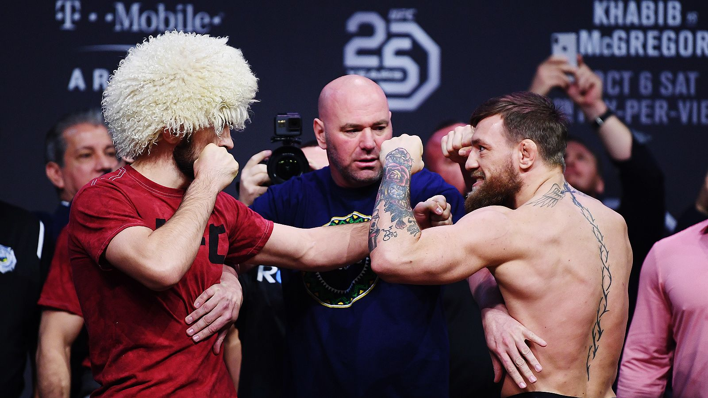
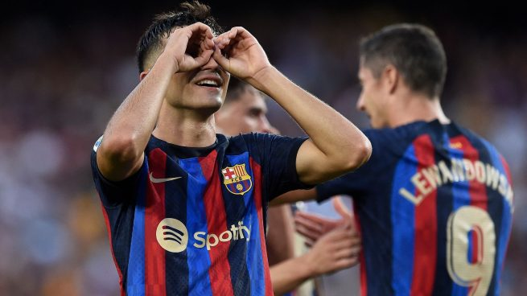
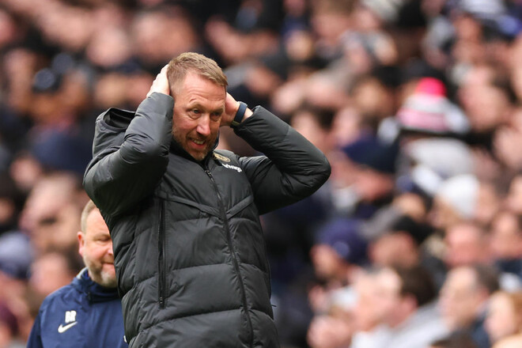
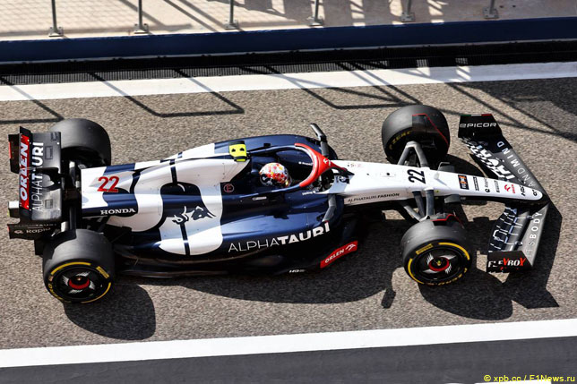
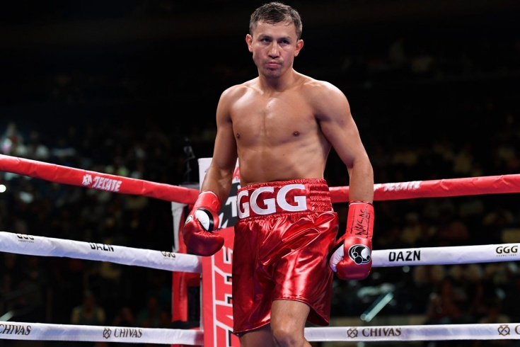

Khabib Nurmagomedov made a powerful speech where he spoke about Conor McGregor
Whenever Khabib Nurmagomedov is asked about the fight with Conor McGregor in the format of a casual conversation, he gives an answer that goes to the people.
He will say that when the flash knockdown happened in the second round, he prayed to himself that the Irishman did not fall into a knockout because he wanted to punish him for all five rounds, then he will note the importance of Conor, because the victory over him helped the development of his agricultural projects in Dagestan, then he will spin something else.
At least once a year, Habib adds something to the history of that fight, extracting a new texture from memory. So recently, at a meeting with the Muslim community in Birmingham, when it came to McGregor, he found a new look at that fight. It turns out that the victory in it inspired courage in Muslims all over the world — they could again speak out loud important postulates from their religion."I lived in the gym, I trained so hard, it was the most important fight in my life. Now, when I look at this fight... from the moment that happened on September 11, 2001, what happened to the entire Muslim community in the world, for the next 17 years, until we got into a fight [with McGregor], the media around the world spoke badly about the Muslim community.
Latest news

Petri today: latest news about the athlete.
After the victory over Barcelona, Garnacho trolled the club and Pedri. Suddenly, Cadiz stood up for the Catalans

"That's football." Chelsea coach compared...
Chelsea lost to Tottenham 0-2 in the English Championship match, and Blue coach Graham Potter understands that he may soon be fired.

Red Bull is discussing the sale of the...
In the foreseeable future, AlphaTauri is waiting for drastic changes – the team will either change its base, moving from Italian Faenza to the...
